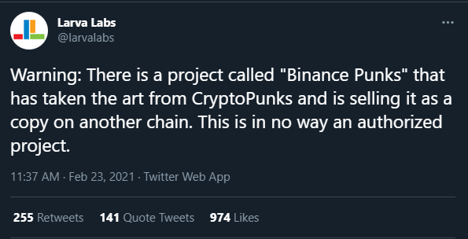
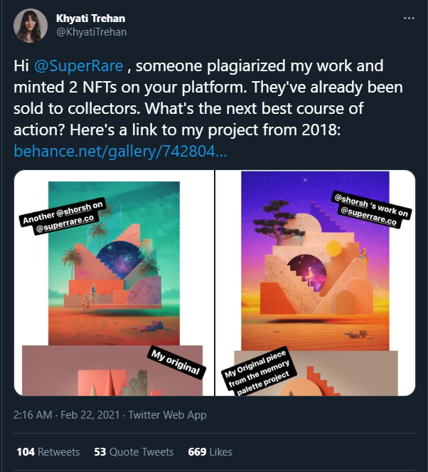
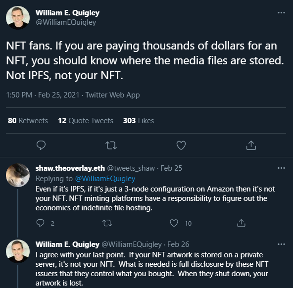

Non-Fungible Tokens (#NFTs) is a very wide topic and I do not want to go in details here, so I just suggest a couple of links:
- The Non-Fungible Tokens Bible by OpenSea : it contains everything you need to know about NFTs.
- A Beginner’s Guide to NFTs: it contains an interesting panorama of all types of existing NFTs (i.e.: NFT is not only art or gaming. This blog is using a NFT as domain name: alebaffa.eth is a NFT that points to my blog stored on IPFS).
It’s interesting to see what problems are coming up and still need to be fixed. 
Digital scarcity and proof of ownership programmatically embedded in Non-Fungible Tokens alone don’t prevent someone to screenshot your NFT and resell it on another marketplace: https://twitter.com/larvalabs/status/1364041628508434432. I’d be very interested to know what is the legal framework for NFT art.
 The above case reminds me of The Future of Ideas, the book from Lawrence Lessig that I read a decade ago. It was written at the very early stages of the Web 2.0 when there was a risk that the old lobbies (music labels, movies companies, etc..) could have the power to leverage their Intellectual Properties rights to stop the new wave of creativity that Internet was helping to flourish. This book, and the movement it helped to create, led to the creation of the Creative Commons. Of course, we are not talking about lobbies here now, but the problem is the same: if today a NFT can also assume the form of “fungible/non-fungible token”, a composable token (ERC-998), it means we can programmatically create a “remix”. How we are going to deal with it, programmatically, will be interesting to see in terms of copyright. The benefits of course is that the original owner of part of this composable automatically takes credit and profit, but what if ERC-998 is not used? What the NFT marketplaces are going to do to protect the artists? Can the current legal framework be used? Which one? Can the blockchain proof-of-ownership be used in court?
 Another problem is the storage. NFTs storage is mostly still up to the owner, which is not sustainable in the long term. Some use IPFS “pinning”, which means the token is stored on someone else’s IPFS node that keeps it for you, which in turns often means on someone else’s AWS storage used as a IPFS node. “Not your storage, not your NFT”. This problem could be solved with solutions like Filecoin, which adds the economic incentive to IPFS, but it has not been yet adopted by any of the NFT marketplaces.